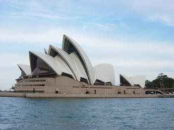
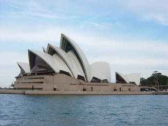

The Sydney Opera House is one of the most recognizable attractions in Australia. It was opened by Queen Elizabeth II on October 20, 1973. Over 2 million visitors each year attend various performances, including plays, symphonies, and ballets to name a few. In addition to be a center for entertainment, it also hosts a number of meetings, including the 2007 APEC, which was attended by the 21 Asia Pacific states!